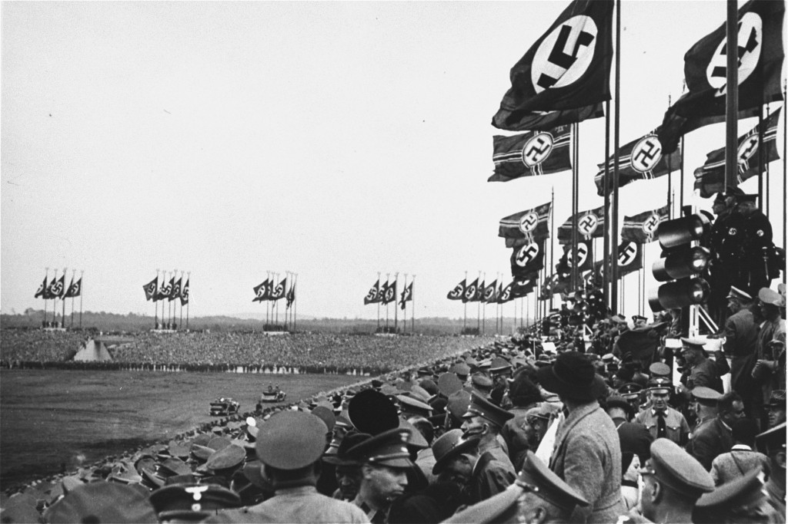

El origen del Imperio alemán se encuentra en el proceso de unificación de los diferentes estados alemanes durante el siglo XIX. Este proceso fue liderado principalmente por Otto von Bismarck, quien era el primer ministro de Prusia y buscaba unir a los territorios alemanes bajo un solo gobierno. A través de conflictos y alianzas políticas, Prusia logró imponerse como la potencia dominante entre los estados alemanes. Finalmente, después de la victoria contra Francia en la Guerra franco-prusiana, en 1871 se proclamó el Imperio alemán y Guillermo I de Alemania fue nombrado emperador, marcando así el nacimiento de un nuevo y poderoso Estado en Europa.